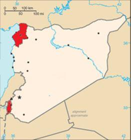

L’histoire des relations de la France et de la Turquie est le reflet de la puissance et de l’indépendance de notre pays. Il est arrivé à celui-ci de s’allier avec le Grand Turc contre l’ennemi commun, l’Empire des Habsbourg.
Cette alliance à revers avec le Califat musulman contre le Saint Empire chrétien évitait l’écrasement par ce dernier. Elle perdurera pendant tout l’Ancien Régime et accordera à la France une place privilégiée dans l’Empire Ottoman, sur le plan commercial, et pour la protection des personnes, dont le Liban est aujourd’hui encore le témoin. François 1er et Louis XIV en useront le premier pour sauver son royaume face à Charles-Quint, le second pour faciliter ses conquêtes.
L’héroïne niçoise Catherine Ségurane défendit ainsi sa ville contre les Ottomans et les Français lors du siège de Nice en 1543. Napoléon mit fin à cette entente en jetant les Turcs dans les bras des Anglais, notamment après sa désastreuse aventure égyptienne, qui consomma inutilement une armée et une flotte pour bâtir sa légende. Depuis, les relations entre Paris et Istamboul, puis Ankara, ont connu des hauts et des bas dominés par d’autres intérêts que les nôtres.
Une occasion manquée a correspondu à la montée en puissance de Méhemet Ali qui, à la tête de l’Égypte qu’il entendait moderniser, faillit renverser les Ottomans auxquels son armée infligea de sérieuses défaites. Son tropisme français n’a pas été exploité sous Louis-Philippe, car la France s’était engagée dans l’alliance anglaise, pour le coup contraire à ses intérêts. La succession des régimes, puis celle des gouvernements n’ont guère permis une politique étrangère cohérente et continue. Les Britanniques sont intervenus pour faire rentrer le fondateur de l’Égypte moderne dans le rang, le leur, en fait. Quant au « génial » neveu qui remporte sans doute la palme de la diplomatie la plus stupide de notre histoire, il accompagna l’intervention anglaise en Crimée contre la Russie pour sauver la « Sublime Porte », sans que cette expédition nous apporte quoi que ce soit.
En 1914-1918, l’Empire Ottoman était devenu l’allié de l’Allemagne. En pleine décadence depuis longtemps, il s’effondra à la fin de la Grande Guerre.
Visite de l'empereur Guillaume II à Constantinople en octobre 1917, à bord du croiseur Yavuz Sultan Selim (ex-Goeben).
La croûte islamique du califat se fissura et de nombreux peuples soumis, Arabes, Arméniens, Grecs, Kurdes tentèrent de se libérer et de revendiquer soit leur indépendance soit leur rattachement aux régions ou États extérieurs à l’Empire et peuplés par leur “ethnie”. Ce souhait fut entendu lors du traité de Sèvres en 1920 puisque la Turquie actuelle, l’Anatolie fut, sur le papier, partagée entre les Grecs qui conservaient la région de Smyrne (Izmir) où ils vivaient depuis 3000 ans, les Arméniens à l’Est dans ce qu’ils appellent aujourd’hui « l’Arménie Occidentale », et les Kurdes à qui on promettait un État, tandis que les Français, les Anglais et les Italiens y obtenaient des zones d’influence. C’était sans compter sur plusieurs facteurs : d’abord, le nationalisme turc, né quelques décennies auparavant avec les Jeunes Turcs qui, au pouvoir, furent les organisateurs de l’entreprise génocidaire, notamment à l’encontre des Arméniens ; l’armée conduite par Mustafa Kemal qui réoccupa l’ensemble du territoire et repoussa les Grecs ; ensuite, l’épuisement des nations victorieuses qui préférèrent assurer leurs avantages économiques plutôt que d’intervenir dans des conflits à l’allure de croisade, en soutenant les armées blanches en Russie ou les Chrétiens en Turquie ; l’incroyable médiocrité des dirigeants français, par exemple de Georges Leygues qui soutint le kémalisme. Le tout conduisit au Traité de Lausanne qui consacra la victoire turque en 1923.
 Sandjak d’AlexandretteLa France qui avait obtenu le mandat sur la Syrie abandonna le Sandjak d’Alexandrette à la Turquie en 1939 pour conjurer une attaque turque pendant la guerre avec l’Allemagne. La cession de ce territoire où se trouve la ville d’Antioche, si importante pour l’histoire du christianisme, est symbolique : habité majoritairement par des Arméniens et des Arabes chrétiens ou alaouites, il a été progressivement peuplé de Turcs sunnites.
C’est la logique ethnique du nationalisme turc qui a, par le massacre et l’exil, « turquisé » le pays actuel. La Turquie est structurellement génocidaire. L’œuvre se poursuit à l’encontre des Kurdes, en Syrie, au détriment des Grecs, à Chypre, avec la complicité au moins passive des Occidentaux.
La Turquie, depuis l’arrivée d’Erdogan associe au nationalisme turc, une volonté hégémonique dans le monde islamique « occidental » à travers les Frères Musulmans. Le nouveau “sultan” a deux fers au feu : le rassemblement des Turcs jusqu’au cœur de l’Asie, d’où son intervention décisive auprès de l’Azerbaïdjan, l’expansion islamiste, d’où sa présence également couronnée de succès en Libye. Jusqu’à présent, les Occidentaux, et les Français en particulier, avaient plutôt été les complices de cette stratégie, notamment par leur hostilité aveugle contre la Russie, et ses alliés, comme la Serbie ou la Syrie. Derrière celle-ci se profilent d’immenses intérêts économiques. Sans doute notre pays a-t-il révisé sa position depuis 2019, lorsque M. Macron avait évoqué la « mort cérébrale » de l’Otan, mais on a encore vu à propos du Haut-Karabakh ou Artsakh, à quel point, la diplomatie du verbe se révélait impuissante. Les gestes et les actes seuls comptent. L’arrivée probable des démocrates à la Maison Blanche avec leur obsession antirusse et leur soutien aux Frères Musulmans lors du « printemps arabe » devrait conduire la France à réinventer sa stratégie d’alliance à revers.

Partager cette page